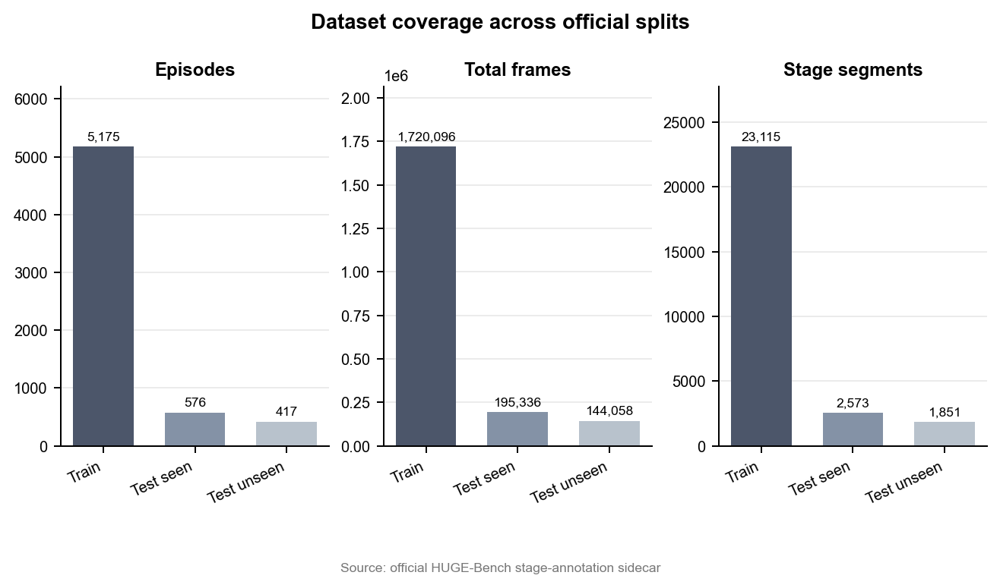
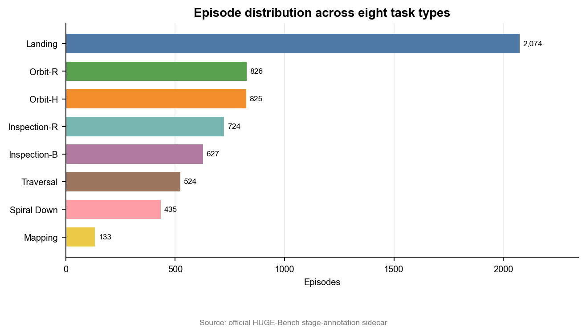
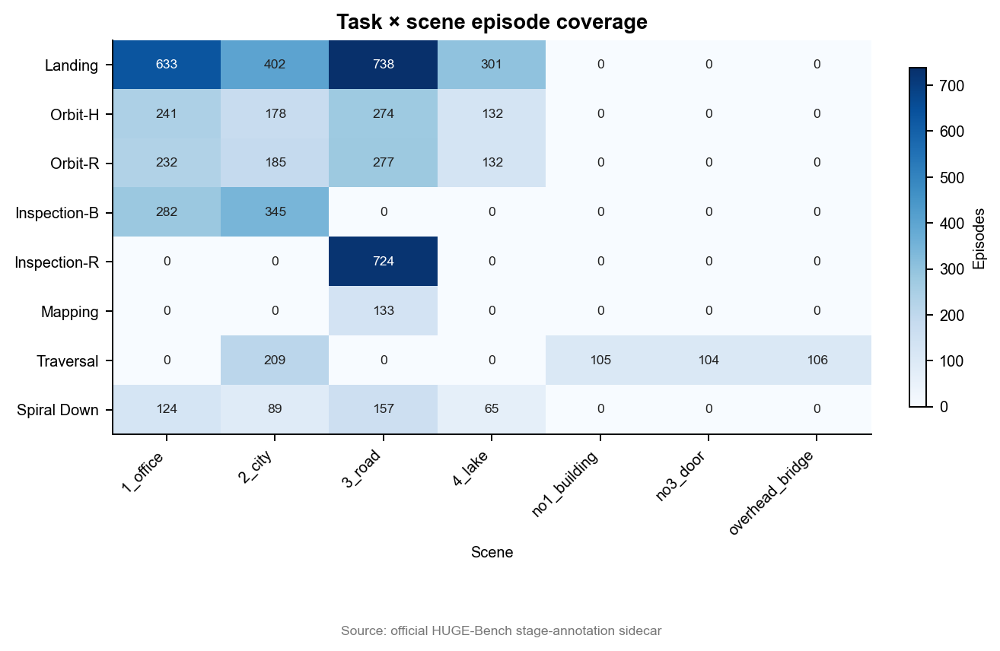
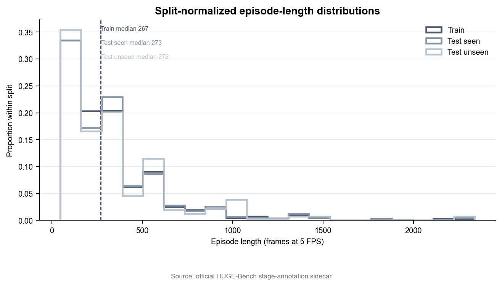
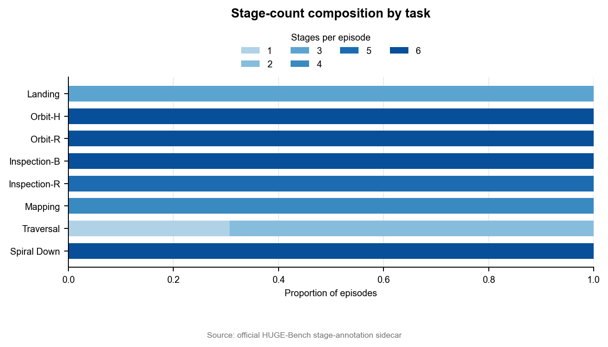
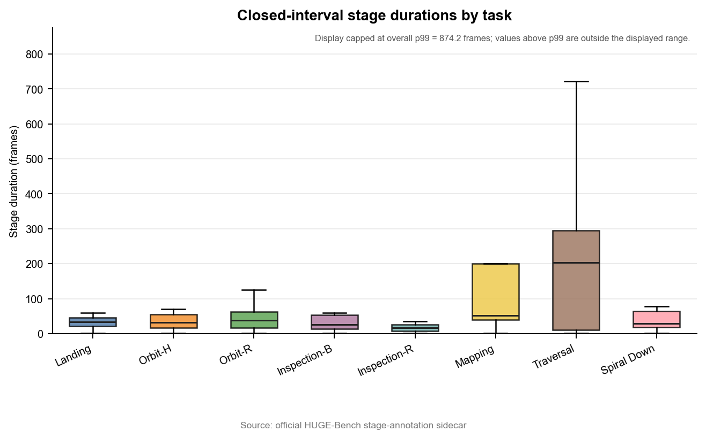
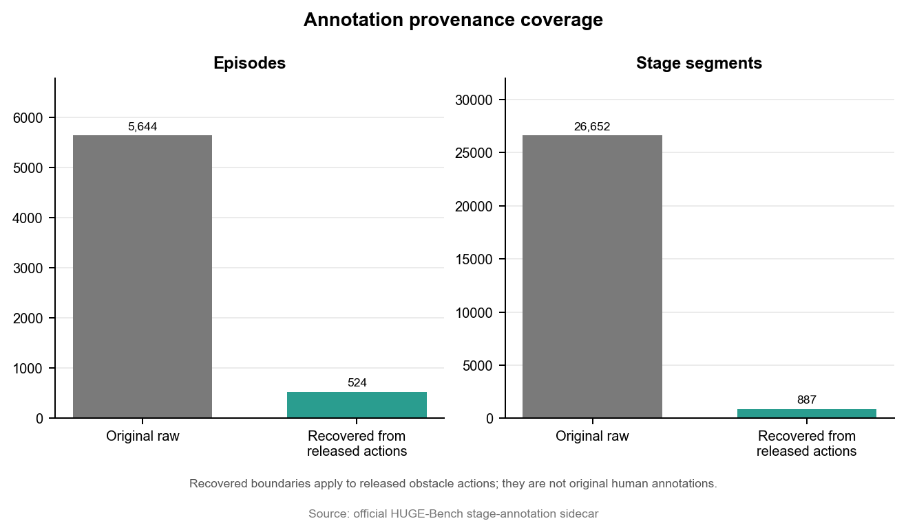
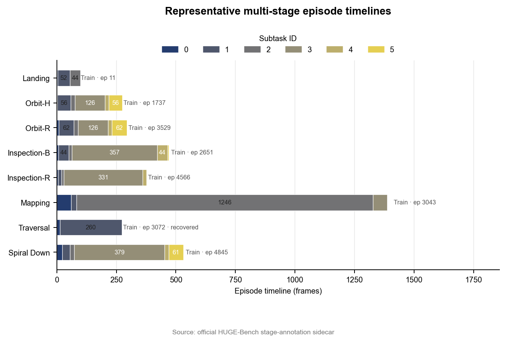

HUGE-Bench 轻量本地复现报告（数据与标注层）
1. 复现目标与结论边界
复现了 HUGE-Bench 官方公开数据的任务结构、多阶段标注统计与标注完整性检查。
本报告仅覆盖数据与标注层，不把数据统计或合成 smoke test 表述为模型或论文结果。
2. 输入、版本与完整性校验
源数据集：yu781986168/HUGE_Dataset_v0；标注根目录：D:\university\推免\夏令营\中南大学\陶超 考核复现\HUGE-Bench\trajectory_generation\stage_annotations。
仓库 commit：d000b99794e9da85dff117db61ef874659b91ae8；manifest SHA-256：eef03c4acb5ade46c64e12c799d480b8bdf918f30ec0d93058692f27ea4c95e7。
完整性校验：PASS，共 147,263 项（PASS 147,263，FAIL 0）。
3. 数据规模总览
共 6,168 个 episode、27,539 个阶段片段、2,059,490 帧，任务数 8，场景数 7。
统一按 5 FPS 换算，总时长为 114.4161 小时；此换算不代表推理耗时。
4. 八张图的逐图解读
以下八张图均由同一摘要中的真实统计量解释，不外推到模型性能。








5. 多阶段标注与 provenance 说明
original_raw：5,644 个 episode、26,652 个阶段；recovered_from_released_actions：524 个 episode、887 个阶段。
recovered obstacle-action boundaries are not original human annotations; recovered_from_released_actions 不等同于原始人工阶段标注。
6. 官方 metric.py 合成 smoke test
Synthetic metric implementation smoke test — not a paper result.
状态：PASS；avg_tcr=1.0，ndtw=1.0，nsp=1.0，success=1.0，path_length=2.0。
限制：synthetic identical trajectories only; no predicted model trajectory, collision mesh, 3DGS simulator, or closed-loop evaluation; the result cannot reproduce or support the paper's model-performance table; softdtw_gamma=0.1 is used because the current official implementation with gamma 0 exhibits division-by-zero / non-finite behavior in the local probe. 该检查只验证实现可执行性，不是论文指标复现。
7. 本地资源使用
峰值 Python 内存：99,371,512 bytes；elapsed：6.936 秒。
以上为调用方提供的实测资源值。
不据此声称使用或未使用 GPU。
8. 可复现文件清单
以下相对路径链接到五张 CSV 表和机器可读 summary.json。
9. 不能声称的结果
未复现 PI0/PI0.5 模型性能。
未复现论文 TCR、nDTW、NSP、CR 或 CSPL 主实验数值。
未完成 3DGS 渲染、闭环飞行或碰撞评估。
recovered_from_released_actions 不等同于原始人工阶段标注。
10. 下一步：AutoDL 阶段 A
下一阶段可在独立、可度量的运行中接入模型推理与资源采样；在获得新证据前，本报告的结论边界保持不变。